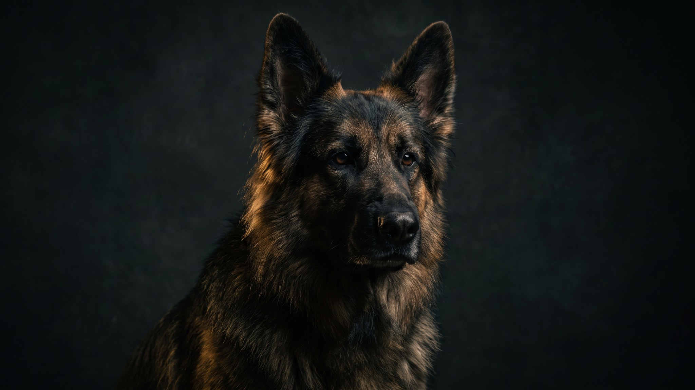

На фермах средневековой Германии эта собака охраняла амбары и гоняла крыс. В XIX веке заводчики взяли её за основу и вывели добермана и карликового пинчера. Сам немецкий пинчер при этом остался в тени и сегодня редко встречается в России. А зря: он сочетает рабочий интеллект с компактным размером и почти нулевыми требованиями к грумингу. Есть нюансы, о которых стоит знать до покупки.
🐾 У вас немецкий пинчер?
AnimaLife соберёт уход под породу: к каким болезням есть склонность, что проверять по возрасту, чем кормить и когда пора к врачу. Бесплатно, прямо в мессенджере.
Собрать план ухода → Собрать в MAX →
У вас iPhone? AnimaLife есть в App Store
Немецкий пинчер (German Pinscher) считается одной из старейших пород Германии. Гладкошёрстных амбарных собак среднего размера упоминают с XVII века. В 1879 году немецкий пинчер и шнауцер числились в одной племенной книге как варианты одного типа. От него в 1890-х годах Карл Доберманн вывел добермана, а позже вывели цвергпинчера (карликового). Средний пинчер, стало быть, оригинал, от которого пошли оба.
После Второй мировой порода едва выжила: поголовье упало катастрофически, восстанавливали её десятилетиями. Сегодня немецкий пинчер редок, но генетически здоров. Узкое восстановление, как ни парадоксально, сократило груз наследственных заболеваний.
Рост 43–51 см, вес 14–20 кг. Корпус квадратный, мускулистый. Шерсть короткая, плотная, блестящая, без подшёрстка. Окрас бывает рыже-коричневым (оленьим, тёмно-красным) или чёрным с рыжими отметинами.
Немецкий пинчер работал сторожем и крысоловом. Оба инстинкта живы по сей день. Это бдительная, территориальная собака с высоким охотничьим драйвом: кролики, кошки, грызуны в доме воспринимаются как добыча. Незнакомцев пинчер встречает настороженно, лает быстро и без предупреждения.
Интеллект высокий, скуку он переносит плохо. Предоставленный сам себе, найдёт занятие без вашего участия, и оно вряд ли вам понравится. Нужно не менее 1,5–2 часов активности в день плюс нюхательные игры, поисковые задачи или аджилити. Для собачьего спорта порода подходит хорошо: обидиенс, IPO, трекинг.
Учится быстро, но проверяет хозяина на прочность. Мягкотелого владельца пинчер переигрывает без усилий. Нужна последовательность и спокойная уверенность. Социализацию начинают рано, с щенячьего возраста, и делают её широкой.
Порода не для первой собаки у пассивного владельца. Опытный хозяин с активным образом жизни получит верного, умного партнёра на 12–14 лет.
🐾 Ваш питомец — немецкий пинчер?
Заведите профиль в AnimaLife: приложение запомнит породу, возраст и вес и будет подсказывать по уходу именно для неё. Вопросы AI-ветеринару — круглосуточно и бесплатно.
Завести профиль → Завести в MAX →
У вас iPhone? AnimaLife есть в App Store
🐾 Понравился разбор?
Подпишитесь на канал — каждый день разбираем по одному тревожному симптому у кошек и собак: что в пределах нормы, а когда пора к врачу. Подпишитесь, чтобы не пропустить разбор, который может спасти здоровье вашего питомца.
Материал носит информационный характер и не заменяет очную консультацию ветеринара. По вопросам здоровья питомца обращайтесь к вашему ветеринарному врачу.